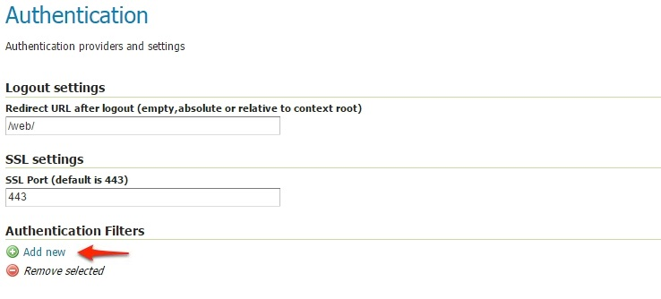

Authentication with OAuth2¶
This tutorial introduces GeoServer OAuth2 support and walks through the process of setting up authentication against an OAuth2 provider. It is recommended that the Authentication chain section be read before proceeding.
OAuth2 Protocol and GeoServer OAuth2 core module¶
This module allows GeoServer to authenticate against the OAuth2 Protocol.
In order to let the module work, it’s mandatory to setup and configure both oauth2 and oauth2-xxxx-extension.
The first one contains the necessary dependencies of the OAuth2 core module. This module contains the implementation of the GeoServer security filter, the base classes for the OAuth2 Token services and the GeoServer GUI panel.
Since in almost all cases the only thing different between OAuth2 Providers are the endpoint URIs and the client connection information (not only the keys - public and secret - but also the user profile representations), in order to allow GeoServer connecting to a specific OAuth2 provider it is sufficient to install the OAuth2 Core module plugin (and correctly configure the parameters through the GeoServer GUI - see next section for the details) and the concrete implementation of the OAuth2 REST token template and resource details.
Currently this module is shipped with a sample extension for Google OAuth2 Provider. This is a particular case since the
Google JWT response is not standard and therefore we had to define and inject also a GoogleUserAuthenticationConverter taking
the Google REST response against a valid access_token and converting it to an OAuth2 standard one.
Other than this the most interesting part is the implementation of the base class GeoServerOAuth2SecurityConfiguration.
The latter contains the Google implementation of the OAuth2RestTemplate.
In the next section we will see how to install and configure the OAuth2 security filter on GeoServer authenticating against Google OAuth2 Provider.
Configure the Google authentication provider¶
The first thing to do is to configure the OAuth2 Provider and obtain Client ID and Client Secret keys.
Obtain OAuth 2.0 credentials from the Google API Console.
Visit the Google API Console to obtain OAuth 2.0 credentials such as a client ID and client secret that are known to both Google and your application. The set of values varies based on what type of application you are building. For example, a JavaScript application does not require a secret, but a web server application does.
Login with a valid Google Account
Click on
API ManagerClick on
CredentialsNote
The first time you land here, Google will ask to create at least one project

For the purpose of this tutorial we will create a sample project. You are free to create other projects or update existing ones through the Google API Console later.
If no
Credentialsare present, you will be asked to create new one.
Select an existing (or create a new one)
OAuth Client IDClick on the
Client credentialscontext menu as shown in the figure below.Configure a new
Web applicationIf it is the first time you create an
OAuth Client ID, you will be asked to create a newconsent screenCustomize the
consent screenWarning
This step is mandatory only if it’s the first time you are defining a
Web applicationon a new project.Note
It can be edited and updated also later (see last point of this section below)
Select
Application type->Web applicationWarning
This step is mandatory only if it’s the first time you are defining a
Web applicationon a new project.Add a
Nameand theAuthorized redirect URIslike shown here below.Note
This sample creates a client working on the default local URL
http://localhost:8080/geoserver. Of course this will work only on a local instance and can’t be used for a production system.However it is possible to add as many
Authorized redirect URIsyou need to a newWeb application.It is also possible to create many
Client credentialswith customisedconsent screenandWeb application, depending on your specific needs. Every public GeoServer instance (or cluster of GeoServer belonging to a specific project) should have its own specificClient credentials.Note
Always add two entries for each URI. One without the ending
/and another one with it.
Click on
Createand take note of theClient IDand theClient Secret.At the end of the procedure Google will show-up a small dialog box with the
Client IDand theClient Secret. That info can be always accessed and updated from the Google API ConsoleOptionally customize the
OAuth consent screen.At any time it is possible to update and customize the
OAuth consent screen. You can put here your logo, app name, ToS and so on.
Configure the GeoServer OAuth2 filter¶
Start GeoServer and login to the web admin interface as the
adminuser.Click the
Authenticationlink located under theSecuritysection of the navigation sidebar.
Scroll down to the
Authentication Filterspanel and click theAdd newlink.Click the
OAuth2link.
Fill in the fields of the settings form as follows:
The default values provided with the plugin are valid for the Google OAuth2 Provider and are the following:
"Enable Redirect Authentication EntryPoint" = False "Access Token URI" = https://accounts.google.com/o/oauth2/token "User Authorization URI" = https://accounts.google.com/o/oauth2/auth "Redirect URI" = http://localhost:8080/geoserver "Check Token Endpoint URL" = https://www.googleapis.com/oauth2/v1/tokeninfo "Logout URI" = https://accounts.google.com/logout "Scopes" = https://www.googleapis.com/auth/userinfo.email,https://www.googleapis.com/auth/userinfo.profile
Note
Client IDandClient Secretare the ones Google providedChoose a
Role Serviceable to recognize user emails as IDs. By default a connected user will haveROLE_USERrole
Warning
A few words on the Enable Redirect Authentication EntryPoint option
This option allows you to decide whether or not to force automatic redirection to OAuth2 Access Token URI or not for authentication.
What does that mean?
Enable Redirect Authentication EntryPoint = True
If not already authenticated (or no valid Access Token is provided in the query string), this option will force a redirection to the OAuth2 Provider Login page.
This may cause unwanted behavior since it will override every other explicit login method like
form. In other words if the filter is applied for instance to thewebendpoint, it won’t be possible to access to the GeoServer Admin GUI using the standard login method via browser.Enable Redirect Authentication EntryPoint = False
In order to avoid the above issue, by disabling this option you will be forced to use an explicit Authentication Endpoint to login via the OAuth2 Provider login page.
If not already authenticated (or no valid Access Token is provided in the query string), you must authenticate through the following URLs:
GeoServer OAuth2 Authorization Endpoint;
http://<host:port>/geoserver/j_spring_oauth2_loginOAuth2 Provider Explicit User Authorization Endpoint; this must be adapted for your specific OAuth2 Provider, the protocol stated that it should be
https://<USER_AUTHORIZATION_URI>?scope=<SCOPES>&response_type=code&redirect_uri=<REDIRECT_URI>&client_id=<CLIENT_ID>
For Google OAuth2 Provider is:
https://accounts.google.com/o/oauth2/auth?scope%3Dhttps://www.googleapis.com/auth/userinfo.email%2Bhttps://www.googleapis.com/auth/userinfo.profile%26response_type%3Dcode%26redirect_uri%3D<REDIRECT_URI>%26client_id%3D<CLIENT_ID>
Update the filter chains by adding the new OAuth2 filter.
Once everything has been configured you should be able to see the new
oauth2filter available among theAuthentication Filterslist
Through this it will be always possible to modify / update the filter options, or create more of them.
The next step is to add the filter to the
Filter Chainsyou want to protect with OAuth2 also
Select the OAuth2 Filter for each filter chain you want to protect with OAuth2.
If you need to protect all the GeoServer services and the GeoServer Admin GUI too with OAuth2, you need to add the
oauth2filter to all the following chainswebrestgwcdefault
The order of the authentication filters depends basically on which method you would like GeoServer to try first.
Note
During the authentication process, the authentication filters of a
Filter Chainare executed serially until one succeed (for more details please see the section Authentication chain)Warning
If Enable Redirect Authentication EntryPoint = True for OAuth2 Filter, the
webchain won’t be able to login through theformmethod.Note
Remember that the
anonymousfilter must be always the last one.Save.
It’s now possible to test the authentication:
Navigate to the GeoServer home page and log out of the admin account.
Try to login again, you should be able now to see the external Google login form.
OpenID connect authentication¶
The OpenID connect authentication is working in a way quite similar to Google (and GitHub) authentications, the only difference is that the authentication page cannot propose default values for the various endpoints, which have to be configured manually.
In case the web login will not be used, the “client ID” and “client secret” are not actually needed, and can be filled with two made up values (the validation just checks they are present, but they will be used only in the “authorisation flow”, but not when doing OGC requests where the client is supposed to have autonomously retrieved a valid bearer token).
The configuration GUI supports OpenID Discovery documents. If the server supports them it’s sufficient to provide the path to the document, or to the authentication service root, and the GUI will auto-fill itself based on the document contents:

In addition, the OpenID connect authentication is able to extract the user roles from either the ID token or the Access Token:
The chosen attribute must be present in either the Access Token or in the Id token, and be either a string or an array of strings.
SSL Trusted Certificates¶
When using a custom Keystore or trying to access a non-trusted or self-signed SSL-protected OAuth2 Provider from a non-SSH connection, you will need to add the certificates to the JVM Keystore.
In order to do this you can follow the next steps:
In this example we are going to
Retrieve SSL certificates from Google domains:
“Access Token URI” = https://accounts.google.com/o/oauth2/token therefore we need to trust
https://accounts.google.comor (accounts.google.com:443) “Check Token Endpoint URL” = https://www.googleapis.com/oauth2/v1/tokeninfo therefore we need to trusthttps://www.googleapis.comor (www.googleapis.com:443)Note
You will need to get and trust certificates from every different HTTPS URL used on OAuth2 Endpoints.
Store SSL Certificates on local hard disk
Add SSL Certificates to the Java Keystore
Enable the JVM to check for SSL Certificates from the Keystore
Retrieve the SSL Certificates from Google domains
Use the
opensslcommand in order to dump the certificateFor
https://accounts.google.comopenssl s_client -connect accounts.google.com:443
And for
https://www.googleapis.comopenssl s_client -connect www.googleapis.com:443
Store SSL Certificates on local hard disk
Copy-and-paste the two sections
-BEGIN CERTIFICATE-,-END CERTIFICATE-and save them into two different.certfilesNote
.certfile are plain text files containing the ASCII characters included on the-BEGIN CERTIFICATE-,-END CERTIFICATE-sectionsgoogle.cert(or whatever name you want with.certextension)google-apis.cert(or whatever name you want with.certextension)Add SSL Certificates to the Java Keystore
You can use the Java command
keytoollike thisgoogle.cert(or whatever name you want with.certextension)keytool -import -noprompt -trustcacerts -alias google -file google.cert -keystore ${KEYSTOREFILE} -storepass ${KEYSTOREPASS}
google-apis.cert(or whatever name you want with.certextension)keytool -import -noprompt -trustcacerts -alias google-apis -file google-apis.cert -keystore ${KEYSTOREFILE} -storepass ${KEYSTOREPASS}
or, alternatively, you can use some graphic tool which helps you managing the SSL Certificates and Keystores, like Portecle
java -jar c:\apps\portecle-1.9\portecle.jar

Enable the JVM to check for SSL Certificates from the Keystore
In order to do this, you need to pass a
JAVA_OPTIONto your JVM:-Djavax.net.ssl.trustStore=F:\tmp\keystore.key
Restart your server
Note
Here below you can find a bash script which simplifies the Keystore SSL Certificates importing. Use it at your convenience.
HOST=myhost.example.com
PORT=443
KEYSTOREFILE=dest_keystore
KEYSTOREPASS=changeme
# get the SSL certificate
openssl s_client -connect ${HOST}:${PORT} </dev/null \
| sed -ne '/-BEGIN CERTIFICATE-/,/-END CERTIFICATE-/p' > ${HOST}.cert
# create a keystore and import certificate
keytool -import -noprompt -trustcacerts \
-alias ${HOST} -file ${HOST}.cert \
-keystore ${KEYSTOREFILE} -storepass ${KEYSTOREPASS}
# verify we've got it.
keytool -list -v -keystore ${KEYSTOREFILE} -storepass ${KEYSTOREPASS} -alias ${HOST}